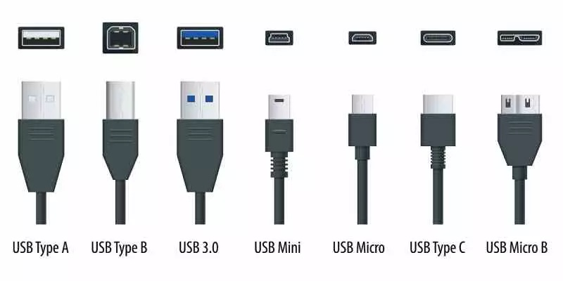
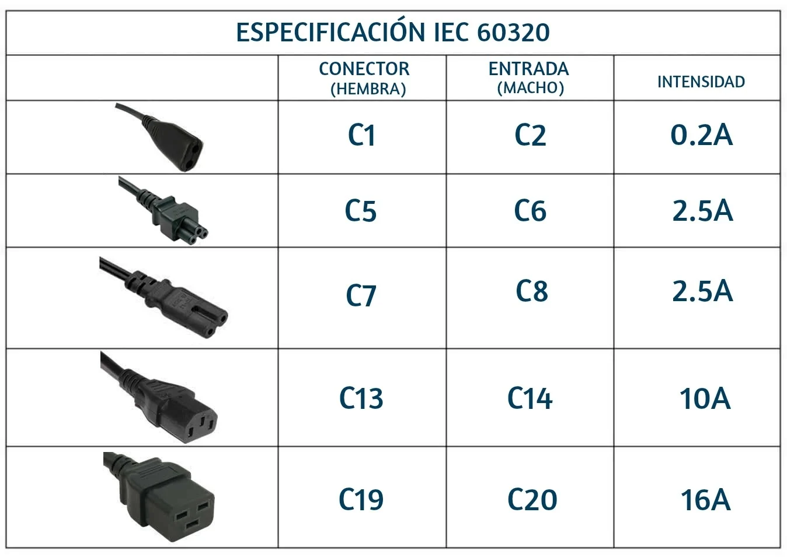
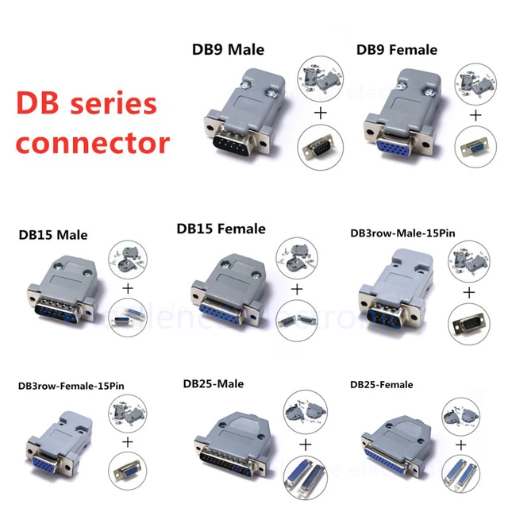
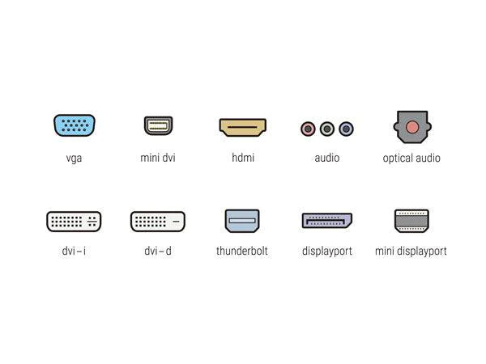

Aquesta pàgina és un draft pre-proposta.
Responsable: lbosch.
Pàgina en construcció.
ICRA - Inventari Electrònica
Cables, adaptadors, plaques i altres peces disponibles a ICRA
{{nom_cat}}
-
[{{quantitat}}x] —
{{peça}}
Nomenclatura cables/connectors típics



